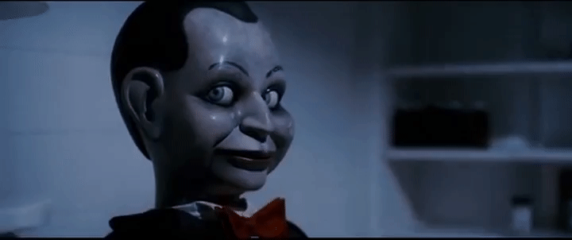

Dead Silence, se basa en uno de los muñecos malditos antiguos que han nacido, conocido como Billy, un títere que aparentemente no tiene ninguna sensación de peligro a simple vista porque se oculta bajo las manos de los titiriteros.

Es capaz de moverse sin que te des cuenta debido a su poco peso y pequeño tamaño, su forma de asesinato es la de cortar lenguas
si se te ocurra hacer el mínimo ruido, si lo haces date por muerto.
No podrás escaparte de él si te tiene como objetivo, ya que su capacidad de rastreo es perfecta debido a que es una entidad
que posee mucha fuerza espiritual, consume tus sueños y los convierte en pesadillas, dándote un preaviso de que él está cerca
tuya observandote. La única forma de librarte de él aunque sea poco probable, es invocar a la entidad de manera tangible para
evitar el poseimiento del objeto, en este caso Billy.